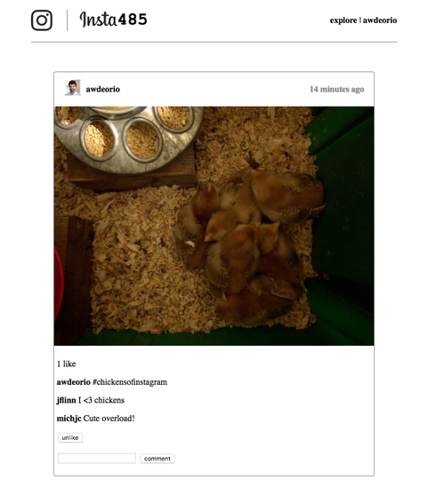

Instagram Clone
Overview
Built a full featured social media web application that replicates core Instagram functionality. The project demonstrates proficiency in full stack development, RESTful API design, and modern web security practices. The application includes user authentication, post creation and interaction, and a responsive single page application interface.
Key Features
- User Authentication & Authorization: Implemented secure user registration and login with password hashing and session management. Users can create accounts, log in, and maintain persistent sessions across page refreshes
- Infinite Scroll: Developed a dynamic feed that loads posts progressively as users scroll, improving performance and user experience by fetching only the visible content
- Interactive Features: Added double click to like functionality, comment system, and real time UI updates without page refreshes using React state management
- REST API: Designed and implemented a comprehensive RESTful API with endpoints for user management, posts, comments, and likes, following industry best practices
- Security Implementation: Protected against common web vulnerabilities including SQL injection, cross site scripting, and cross site request forgery through input validation, parameterized queries, and proper session handling
- Responsive Design: Created a mobile friendly interface that adapts to different screen sizes
Technical Implementation
Backend Architecture
The Flask backend follows the Model View Controller pattern, with clear separation between data models, business logic, and API endpoints. The SQLite database stores users, posts, comments, and likes with properly defined relationships and foreign key constraints. All database queries use parameterized statements to prevent SQL injection attacks.
Frontend Development
The React frontend is built as a single-page application with client-side routing. State management handles user sessions, post data, and UI interactions. The infinite scroll feature is done based on the scroll position of the page.
Security Features
User passwords are hashed using industry-standard algorithms before storage. Session tokens are generated securely and validated on each request. Input sanitization prevents XSS attacks by escaping user-generated content. The application implements proper CORS policies and validates all user inputs on both client and server sides.
API Design
The REST API follows standard conventions with clear resource endpoints. GET requests retrieve data, POST requests create new resources, and DELETE requests remove items. The API returns appropriate HTTP status codes and JSON responses. Authentication is handled through session cookies, with middleware validating permissions for protected routes.
Challenges & Solutions
One challenge was implementing the infinite scroll feature efficiently. Initially, loading posts caused noticeable lag. I optimized this by implementing pagination on the backend, limiting query results, and using React's memo features to prevent unnecessary re-renders of existing posts.
Another challenge was ensuring the double-click like feature worked smoothly without accidentally selecting text or causing UI glitches. I solved this by implementing proper event handling with preventDefault and debouncing to distinguish between single and double clicks.
Results & Impact
The final application provides a smooth, Instagram like experience with fast load times and responsive interactions. The security implementation successfully prevents common web vulnerabilities, as verified through penetration testing exercises. The modular code structure makes the application easy to extend with additional features.